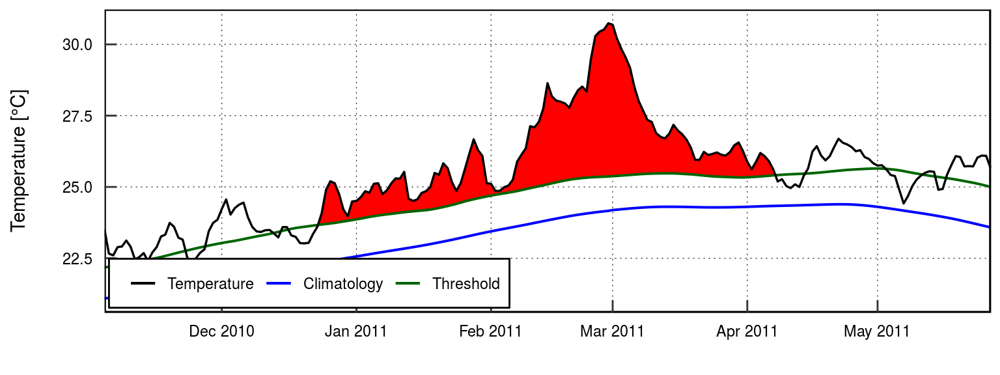
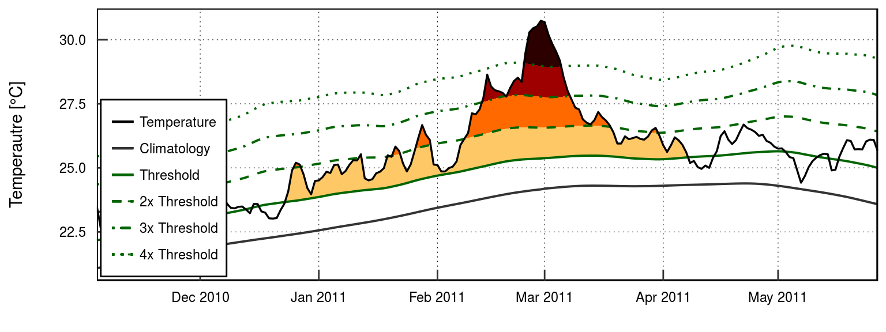
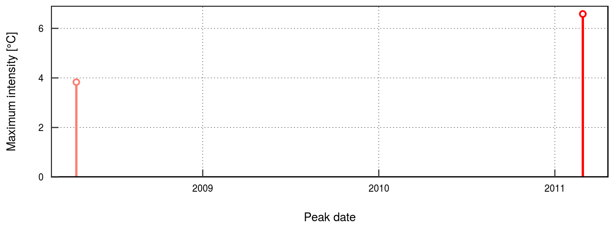
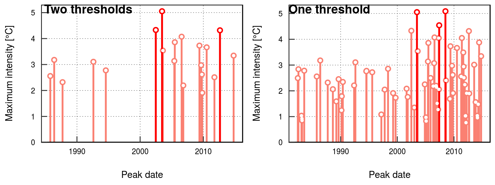
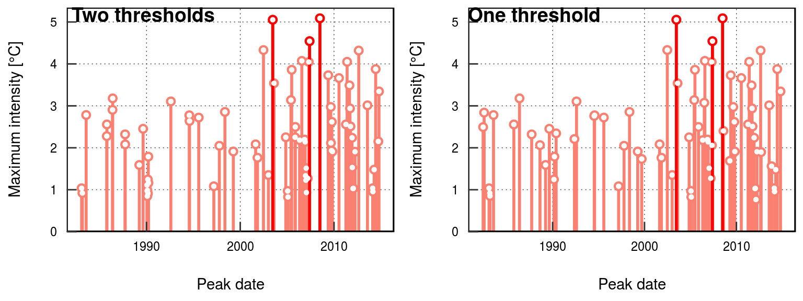

vignettes/complex_clims.Rmd
complex_clims.RmdOne of the long term goals of heatwaveR is the inclusion of many different methods for the creation of climatologies for the use of detecting heatwaves and cold-spells in time series data. To this end we have made a very large change in the event detection pipeline, which is why we moved from the RmarineHeatWaves package to heatwaveR. This change was the inclusion of the ts2clm() function and the removal of climatology generating found in RmarineHeatWaves::detect() in favour of detect_event(), which does not calculate climatologies. In this way we have allowed for the introduction of a multitude of more complex climatology calculation and event detection methods. It is our overarching goal to provide one package that allows climate scientists to calculate these events in both the atmosphere and oceans. But rather than talking about it, let’s walk through a case study on how this shift in the main pipeline of this package can be used for diverse applications.
Brought to our attention by Mr. Haouari from the IHFR institute of meteorology in Algeria was the concept of using a flat 25\(^\circ\)C tMin bottom boundary to screen out events calculated from tMax with the standard 90th percentile upper threshold. As the authors of the heatwaveR package are admittedly marine oriented, we tend to work with daily time series that have only one mean value per day. The use of tMin and tMax is therefore not accommodated explicitly in the arguments that one gives to the ts2clm() and detect_event() functions, but that does not mean that one cannot do so. Below we will work through the steps one would take to calculate (atmospheric) heatwaves, as per their definition in Perkins and Alexander (2013), but excluding the calculation of EHF, and with the additional step proposed by Mr. Haouari. In the interest of reproducibility, we will be creating a tMin and tMax time series from the sst_WA data that is installed with heatwaveR. This is not technically correct to do, but will allow us to illustrate the methodology.
In the following sub-sections we will walk through the step-by-step approach needed to calculate atmospheric heatwaves using a 90th percentile threshold created from the tMax time series for a location, and then filter the events based on the tMin series also needing to exceed 25\(^\circ\)C on the same days. We will finish by showing how to then convert these results back into a format that event_line() and lolli_plot like so that one may still use these convenient functions to visualise the results. After we have shown this we will also demonstrate how to detect events with two different percentile thresholds at the same time.
The first step with any analysis in R should be the loading of the packages to be used.
With our libraries loaded, we will now go about creating artificial tMin and tMax time series from sst_WA. Again, please note that this is not actually something that one should do. We only do so here as heatwaveR does not have any built-in atmospheric data. Real tMin and tMax time series should be used when one is executing this methodology for proper research.
With our artificial time series created, we will now calculate the two thresholds we need to correctly detect and filter the heatwaves. The first is the 90th percentile threshold based on the tMax time series. The second is the exceedance of 25\(^\circ\)C based on the tMin data.
# The tMax threshold
# The WMO standard climatology period 0f 1981-01-01 to 2010-12-31 should be used where possible.
# Unfortunately, the OISST data, from which these data were drawn, only begin in 1982-01-01
tMax_clim <- ts2clm(tMax, climatologyPeriod = c("1982-01-01", "2011-12-31"), pctile = 90)
# The tMin exceedance
# Note the use here of 'minDuration = 3' and 'maxGap = 1' as the default atmospheric arguments
# The deafult marine arguemnts are 'minDuration = 5' and 'maxGap = 2'
tMin_exc <- exceedance(tMin, threshold = 25, minDuration = 3, maxGap = 1)
# Pull out each data.frame as there own object for easier use
tMin_exc_exceedance <- tMin_exc$exceedance
tMin_exc_threshold <- tMin_exc$thresholdWith our climatologies calculated we may now go about detecting the events in the tMax time series.
# Note the use here of 'minDuration = 3' and 'maxGap = 1' as the default atmospheric arguments
tMax_event <- detect_event(tMax_clim, minDuration = 3, maxGap = 1)
# Pull out each data.frame as there own object for easier use
tMax_event_event <- tMax_event$event
tMax_event_climatology <- tMax_event$climatologyWith all of the events detected we may now use the tMin_exc_threshold object to screen out the events in tMax_event_event that had tMin values below our chosen bottom limit of 25\(^\circ\)C.
This is where things may get tricky for some users, and where the default use of the functions in the heatwaveR package ends. We are now going ‘off-road’ so to speak. But do not despair! The tidyverse suite of packages makes data wrangling like this much more user friendly than it was in the dark days of Base R coding.
In order to make the filtering of events easier, we will combine the two different dataframes that we are using as guides to chose the events that meet all of our selection criteria.
# Join the climatology outputs of detect_event() and exceedence()
ts_clims <- left_join(tMax_event_climatology, tMin_exc_threshold, by = c("t"))
# Remove all days that did not qualify for exceddence()
ts_clims_filtered <- ts_clims %>%
filter(exceedance == TRUE)With our two different filtering indices combined into one dataframe we only need one more ingredient before we can create our final product. We have already decided that we want to screen out events that dipped below a given static bottom threshold. Presumably this is a biologically relevant value that has been determined a priori through some other research. But how many days must the tMin values during the event go below this threshold before it must be excluded from our research? The following chunk of code shows how to calculate the number of days during each event that tMin went below the bottom threshold. What one chooses to do with that information is shown in the following chunk.
# Calculate number of days for each event above the 25C threshold
ts_event_duration_thresh <- ts_clims_filtered %>%
group_by(event_no) %>%
summarise(event_duration_thresh = n()) %>%
na.omit()Now that we have a third and final filtering index we may extract the events that meet all of the criteria we haven chosen to impose on them.
# Filter out the events that were not above the static bottom threshold for their entire duration
ts_events_filtered <- left_join(tMax_event_event, ts_event_duration_thresh, by = "event_no") %>%
na.omit() %>%
filter(event_duration_thresh == duration)
ts_events_filtered## # A tibble: 0 x 23
## # ... with 23 variables: event_no <dbl>, index_start <dbl>,
## # index_peak <dbl>, index_end <dbl>, duration <dbl>, date_start <date>,
## # date_peak <date>, date_end <date>, intensity_mean <dbl>,
## # intensity_max <dbl>, intensity_var <dbl>, intensity_cumulative <dbl>,
## # intensity_mean_relThresh <dbl>, intensity_max_relThresh <dbl>,
## # intensity_var_relThresh <dbl>, intensity_cumulative_relThresh <dbl>,
## # intensity_mean_abs <dbl>, intensity_max_abs <dbl>,
## # intensity_var_abs <dbl>, intensity_cumulative_abs <dbl>,
## # rate_onset <dbl>, rate_decline <dbl>, event_duration_thresh <int>Above we see that the result of all of our filtering is that no events occurred within the time series that meet our criteria. We therefore need to loosen up a bit. We may do this by not requiring that the tMin for the events not be above the bottom threshold for their entire duration. To do so we will change the way in which we filter for ts_events_filtered. The following code chunk shows how to screen out events that did not exceed the bottom threshold for more than 3 days.
ts_events_filtered <- left_join(tMax_event_event, ts_event_duration_thresh, by = "event_no") %>%
na.omit() %>%
filter(event_duration_thresh >= duration - 3)
ts_events_filtered## # A tibble: 0 x 23
## # ... with 23 variables: event_no <dbl>, index_start <dbl>,
## # index_peak <dbl>, index_end <dbl>, duration <dbl>, date_start <date>,
## # date_peak <date>, date_end <date>, intensity_mean <dbl>,
## # intensity_max <dbl>, intensity_var <dbl>, intensity_cumulative <dbl>,
## # intensity_mean_relThresh <dbl>, intensity_max_relThresh <dbl>,
## # intensity_var_relThresh <dbl>, intensity_cumulative_relThresh <dbl>,
## # intensity_mean_abs <dbl>, intensity_max_abs <dbl>,
## # intensity_var_abs <dbl>, intensity_cumulative_abs <dbl>,
## # rate_onset <dbl>, rate_decline <dbl>, event_duration_thresh <int>Still zero events. Were we to have a peak at ts_event_duration_thresh we would see that there were only three heatwaves in the entire time series that had tMin values exceeding the static threshold that we set at 25\(^\circ\)C. Furthermore, the majority of the tMin values are below the threshold. So rather than allowing for a set number of days below this threshold, let’s rather ask R to screen out events with only a certain proportion of days below this threshold. Let’s be generous and set this at 25% (i.e. 1/4).
ts_events_filtered <- left_join(tMax_event_event, ts_event_duration_thresh, by = "event_no") %>%
na.omit() %>%
filter(event_duration_thresh >= duration / 4)
ts_events_filtered## # A tibble: 2 x 23
## event_no index_start index_peak index_end duration date_start date_peak
## <dbl> <dbl> <dbl> <dbl> <dbl> <date> <date>
## 1 80 9581 9601 9615 35 2008-03-25 2008-04-14
## 2 92 10585 10651 10689 105 2010-12-24 2011-02-28
## # ... with 16 more variables: date_end <date>, intensity_mean <dbl>,
## # intensity_max <dbl>, intensity_var <dbl>, intensity_cumulative <dbl>,
## # intensity_mean_relThresh <dbl>, intensity_max_relThresh <dbl>,
## # intensity_var_relThresh <dbl>, intensity_cumulative_relThresh <dbl>,
## # intensity_mean_abs <dbl>, intensity_max_abs <dbl>,
## # intensity_var_abs <dbl>, intensity_cumulative_abs <dbl>,
## # rate_onset <dbl>, rate_decline <dbl>, event_duration_thresh <int>And now we see that two heatwaves emerge from the fold. One moderately long event from 2008, and ol’ faithful in 2010-2011 (Wernberg et al. 2016).
We may now have our desired results, but if we want them to work with the built-in visualisation functions that come with heatwaveR we need one more step.
# Create artificial list object similar to detect_event() output
ts_filtered_list <- list(climatology = tMax_event_climatology,
event = ts_events_filtered)# Then run event_line() on it
event_line(ts_filtered_list, start_date = "2010-01-01", end_date = "2012-05-30", spread = 50)
# Or visualise the categories
event_line(ts_filtered_list, start_date = "2010-01-01", end_date = "2012-05-30",
spread = 50, category = TRUE)
# Or lolli_plot as desired
lolli_plot(ts_filtered_list, event_count = 1)
One may of course visualise the outputs from the events calculated here with geom_flame() and geom_lolli() as well, but this will not differ from the default method of using these functions as outlined in their help files so we will not go into that here.
If one then wants to calculate the categories of the events that have met all of the rigours of our complex climatology one will use the same list object created for the visuals above.
ts_category <- category(ts_filtered_list, name = "WA")
ts_category## # A tibble: 2 x 11
## event_no event_name peak_date category i_max duration p_moderate
## <dbl> <fct> <date> <chr> <dbl> <dbl> <dbl>
## 1 80 WA 2008 2008-04-14 III Sev… 3.83 35 57
## 2 92 WA 2011 2011-02-28 IV Extr… 6.58 105 52
## # ... with 4 more variables: p_strong <dbl>, p_severe <dbl>,
## # p_extreme <dbl>, season <chr>The methodology outlined above for the detection/filtering of events with multiple climatologies/thresholds is somewhat cumbersome. Another issue with this technique is that the multiple filters do not affect the calculation of the event metrics (e.g. cumulative intensity), only the primary threshold given to detect_event() is used. If one want to calculate events based on two different thresholds, one must use the arguments built into detect_event(). Below we will show two examples of how to do this with the sst_Med data.
First up we will look at how to calculate event metrics based on a flat bottom threshold of 19\(^\circ\)C and a normal upper threshold of the 90th percentile. To spice things up we are also going to require that the bottom threshold of 19\(^\circ\)C be exceeded for at least 10 days, and we will not allow for any gaps during this time. We will use the default duration and gaps for the 90th percentile threshold.
# First we calculate the exceedance as desired
thresh_19 <- exceedance(sst_Med, threshold = 19, minDuration = 10, maxGap = 0)$threshold
# Then we use that output when detecting our events
events_19 <- detect_event(ts2clm(sst_Med, climatologyPeriod = c("1982-01-01", "2011-12-31")),
threshClim2 = thresh_19$exceedance, minDuration2 = 10, maxGap2 = 0)And that’s all there is to it. Let’s visualise these results against the a standard output to see how they differ. Another benefit of performing complex calculations this way is that the output is already in the format that event_line(), lolli_plot(), and category() already want.
# The default output
events_default <- detect_event(ts2clm(sst_Med, climatologyPeriod = c("1982-01-01", "2011-12-31")))
ggarrange(lolli_plot(events_19), lolli_plot(events_default), labels = c("Two thresholds", "One threshold"))
We may see in the right hand panel that all of the smaller events, many of the larger events, and even two of the largest events were all screened out by our inclusion of the 19\(^\circ\)C static threshold. Please note however that even though the use of the second threshold in this way does allow for the calculation of the event metrics to differ, the values themselves are still being calculated against the seasonal climatology and so using a second threshold won’t generally have much of an effect on the event metric. Rather it mostly screens out smaller or larger events depending on how one chooses to set the threshold.
Using a percentile threshold is not much different than using a static threshold. Rather than using exceedance() to get our second threshold we will use detect_event(). Below we will look at how to calculate normal events (5 day minimum duration above the 90th percentile with a 2 day max gap) while also giving a second threshold set for events that exceed the 95th percentile for at least 2 days, with a 0 day gap. In this way we may screen out smaller events without being to proscriptive about other criteria.
# First we calculate the second threshold
thresh_95 <- detect_event(ts2clm(sst_Med, pctile = 95,
climatologyPeriod = c("1982-01-01", "2011-12-31")),
minDuration = 2, maxGap = 0)$climatology
# Then we use that output when detecting our events
events_95 <- detect_event(ts2clm(sst_Med, climatologyPeriod = c("1982-01-01", "2011-12-31")),
threshClim2 = thresh_95$event, minDuration2 = 2, maxGap2 = 0)And again let’s look at the results in lolliplot format.
ggarrange(lolli_plot(events_95), lolli_plot(events_default), labels = c("Two thresholds", "One threshold"))
If we look closely at these results we see that we have actually created more events than we have filtered out. This is because whenever the temperatures dip above the 95th percentile and then back down below it detect_event() is classifying that as a new event because we have set maxGap = 0. This method allows for a lot of flexibility, but users should also be cautious that they understand what exactly they are asking their machines to do.
To be quite honest, I didn’t think it was going to work out to just use SST data in place of atmospheric temperature and just create tMin and tMax time series through static subtraction and addition of values. Marine temperatures exhibit much more temporal auto-correlation than atmospheric data, which is why the default minimum length for marine heatwaves is 5 days, and 3 for atmospheric heatwaves. This allows marine events to be detected with the atmospheric definition, but it tends not to work the other way around. That being said, I think that the results of this vignette are clear enough to serve as a guideline for how to implement this methodology with proper atmospheric tMin and tMax data. Indeed, I have run real atmospheric data through this methodology myself and so do know that it works.
We also showed in this vignette a more straight forward approach to using a second threshold through the built-in arguments in detect_event(). The use of a second threshold in this way, whether it be based on a static threshold or one derived from a percentile, is useful for the consideration of events that may be more specifically relevant to an organism in question.
I hope the techniques shown in this vignette will be useful both technically and theoretically. The authors of heatwaveR are very happy to receive any further input on the development of the package as well as other potential methods for calculating heatwaves and cold-spells.
Perkins, Sarah E., and Lisa V. Alexander. 2013. “On the measurement of heat waves.” Journal of Climate 26 (13): 4500–4517. doi:10.1175/JCLI-D-12-00383.1.
Wernberg, Thomas, Scott Bennett, Russell C Babcock, Thibaut De Bettignies, Katherine Cure, Martial Depczynski, Francois Dufois, et al. 2016. “Climate driven regime shift of a temperate marine ecosystem.” Science 149 (1996): 2009–12. doi:10.1126/science.aad8745.